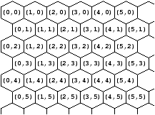
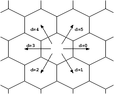

Dinner with Ambiants
ICFP Programming Contest
2004 Task Description
Brought to you by the University of Pennsylvania PL Club1
Version 4
June 5, 2004, 21:00 EDT
1 Overview
The object of this year's programming contest is to design an ant
colony that will bring the most food particles back to its anthill,
while fending off ants of another species. To win the contest, you
must submit the neural wiring for the ants in your colony---a text
file containing code for a simple, finite state machine that is run by
all of your ants. In principle, your entry can be written by hand, but
for complex behaviors you will probably find it useful to write tools
that generate ant code in some way. You may use any programming
language you like for this purpose.
Your ants will compete in a tournament with all the ants submitted by
other teams. In each match, two species of ants are placed in a
random world containing two anthills, some food sources, and several
obstacles. They must explore the world, find food and bring it back
to their anthill. Ants can communicate or leave trails by means of
chemical markers. Each species of ants can sense (with limited
capabilities), but not modify, the markers of the other species. Ants
can also attack the ants of the other species by surrounding them.
Ants that die as a result of an attack become food. The match is won
by the species with the most food in its anthill at the end of
100,000 rounds. The overall winner is the ant that wins the
most matches.
Along with your finite state machine, your contest submission must
include the source code for any tools you write to generate or test
ants programs. We will not attempt to run your tools, but your code
may influence our choice of the judges' prize. We also encourage you
to publish a web page describing your entry after the contest results
have been announced. You can submit up to four separate entries---two
in the lightning division and two in the regular division.
A Brief Look at the State Machine
As outlined above, the behavior of your ants is defined by a simple,
finite state machine. Informally, the instructions of this state
machine can be described as follows:
| Sense sensedir st1 st2 cond |
|
Go to state st1 if cond holds in sensedir; |
| |
|
and to state st2 otherwise. |
| Mark i st |
|
Set mark i in current cell and go to st. |
| Unmark i st |
|
Clear mark i in current cell and go to st. |
| PickUp st1 st2 |
|
Pick up food from current cell and go to st1; |
| |
|
go to st2 if there is no food in the current cell. |
| Drop st |
|
Drop food in current cell and go to st. |
| Turn lr st |
|
Turn left or right and go to st. |
| Move st1 st2 |
|
Move forward and go to st1; |
| |
|
go to st2 if the cell ahead is blocked. |
| Flip p st1 st2 |
|
Choose a random number x from 0 to p-1; |
| |
|
go to st1 if x=0 and st2 otherwise. |
Here is a description of very simple ants in the finite state machine
language. The ant searches for food by performing a random walk until
it locates some food. It then picks up the food and wanders randomly
until it finds itself at home.
Sense Ahead 1 3 Food ; state 0: [SEARCH] is there food in front of me?
Move 2 0 ; state 1: YES: move onto food (return to state 0 on failure)
PickUp 8 0 ; state 2: pick up food and jump to state 8 (or 0 on failure)
Flip 3 4 5 ; state 3: NO: choose whether to...
Turn Left 0 ; state 4: turn left and return to state 0
Flip 2 6 7 ; state 5: ...or...
Turn Right 0 ; state 6: turn right and return to state 0
Move 0 3 ; state 7: ...or move forward and return to state 0 (or 3 on failure)
Sense Ahead 9 11 Home ; state 8: [GO HOME] is the cell in front of me my anthill?
Move 10 8 ; state 9: YES: move onto anthill
Drop 0 ; state 10: drop food and return to searching
Flip 3 12 13 ; state 11: NO: choose whether to...
Turn Left 8 ; state 12: turn left and return to state 8
Flip 2 14 15 ; state 13: ...or...
Turn Right 8 ; state 14: turn right and return to state 8
Move 8 11 ; state 15: ...or move forward and return to state 8
A more detailed specification of the state machine is given in the
following section.
2 Technicalities
The rest of this document specifies the rules of the game in detail.
For compactness, we use a combination of English descriptions and
program fragments written in a simple pseudo-code language. It should
be easy to translate this specification into a simulator in a
programming language of your choice, which you can use to develop and
test your ants. These details are given only for the rigor of
specification and the ease of implementation. The main part of the
contest should be the design of your ants rather than the
implementation of this simulator.
2.1 Geometry
The world on which the game is played is a hexagonal grid (just
for fun).
A position in the world is an (x,y) coordinate, with (0,0) at
the upper-left corner of the world.

In the rest of the specification, we
use the type pos as an abbreviation for pairs of integers:
type pos = (int, int)
On a hexagonal grid, each cell is adjacent to six other cells. We number these in
clockwise order, from 0 (east) to 5 (north-east). We write dir below
for the type of integers that we intend to use as directions.
type dir = 0..5

If d is a direction and p = (x,y) is a position, then the function
adjacent_cell(p,d), which calculates the position of the cell adjacent to p in
direction d, can be defined as follows:
function adjacent_cell(p:pos, d:dir):pos =
let (x,y) = p in
switch d of
case 0: (x+1, y)
case 1: if even(y) then (x, y+1) else (x+1, y+1)
case 2: if even(y) then (x-1, y+1) else (x, y+1)
case 3: (x-1, y)
case 4: if even(y) then (x-1, y-1) else (x, y-1)
case 5: if even(y) then (x, y-1) else (x+1, y-1)
In our pseudo-code notation, functions are defined by function
declarations (as on the first line). The name and intended type of
each argument to the function are given in the form name:type.
If the function returns a value, its type is also given.
We use let (as on the second line) to bind names to the results
of intermediate calculations; here, x and y are the components of
the pair p. The expression ``switch ... of ...'' on the third and
following lines chooses one of the branches (the expressions following
``case ...:'') depending on the value of d.
From its current orientation, an ant can turn one step to the left or
right. We write left_or_right for the set {Left, Right}. In
pseudo-code:
type left_or_right = Left | Right
Now, the turn function takes an element of this set and a direction and
returns a suitably adjusted direction.
function turn(lr:left_or_right, d:dir):dir =
switch lr of
case Left: (d+5) mod 6
case Right: (d+1) mod 6
Ants can also sense their surroundings, by checking whether one of several
predicates (defined below) is true in either their current cell or one of
the three cells in front of them. The function sensed_cell calculates the
coordinates of the cell being sensed.
type sense_dir =
Here /* sense the ant's current cell */
| Ahead /* sense the cell straight ahead in the direction ant is facing */
| LeftAhead /* sense the cell that would be ahead if ant turned left */
| RightAhead /* sense the cell that would be ahead if ant turned right */
function sensed_cell(p:pos, d:dir, sd:sense_dir):pos =
switch sd of
case Here: p
case Ahead: adjacent_cell(p, d)
case LeftAhead: adjacent_cell(p, turn(Left,d))
case RightAhead: adjacent_cell(p, turn(Right,d))
2.2 Biology
There are two colors of ants:
type color = Red | Black
Given one color, the function other_color yields the other:
function other_color(c:color):color =
switch c of
case Red: Black
case Black: Red
The internal state of each ant can be described as a record with the following fields:
-
A unique integer id that determines the order in which the ant takes its
turn to move or sense during each round of gameplay.
- A color.
- An integer between 0 and 9999 representing the current
state of its brain. (All the ants of each species run exactly the
same program, so the entire neural state of an ant of the species can
be characterized by just one number.)
- An integer resting that keeps track of how long the ant has to
rest after its last move before any other action. (Ants move much
more slowly than they can turn and sense their surroundings. This
is modeled by making an ant rest for 14 rounds after each time it
executes a Move instruction. Details of how this works are
specified in Section 2.11.)
- A current direction.
- A boolean has_food indicating whether the ant is currently
carrying a food particle. (An ant can hold only a single unit of
food at a time.)
Rather than making up pseudo-code syntax for creating, projecting, and
modifying records, we will simply assume we can use the following functions to
extract and modify the components of an ant:
function state(a:ant):int = <get state component of a>
function color(a:ant):color = <get color component of a>
function resting(a:ant):int = <get resting component of a>
function direction(a:ant):dir = <get direction component of a>
function has_food(a:ant):bool = <get has_food component of a>
function set_state(a:ant, s:int) = <set state component of a to be s>
function set_resting(a:ant, r:int) = <set resting component of a to be r>
function set_direction(a:ant, d:dir) = <set direction component of a to be d>
function set_has_food(a:ant, b:bool) = <set has_food component of a to be b>
2.3 Geography
Each cell in the world is either clear or rocky. The
predicate rocky(p) is true if the cell at position p is rocky and false
if p is clear.
function rocky(p:pos):bool = <true if the cell at position p is rocky>
Rocky cells are not very interesting---they just impede movement. All the
action happens in clear cells.
At any given moment during the game, each clear cell contains:
-
At most one ant.
- Some non-negative number of food particles. (There is no limit to the number of food particles that may be on a single
cell at a given time. An ant and any amount of food may be on a given
cell at the same time.)
- One set of chemical markers for each of the two ant colors.
As we did for ants, we will not bother fixing a concrete representation for
this information. Instead, we assume we are given several functions for
investigating and manipulating the information in cells.
The first group of
functions concerns ants in cells:
function some_ant_is_at(p:pos):bool =
<true if there is an ant in the cell at position p>
function ant_at(p:pos):ant =
<return the ant in the cell at position p>
function set_ant_at(p:pos, a:ant) =
<record the fact that the given ant is at position p>
function clear_ant_at(p:pos) =
<record the fact that no ant is at position p>
The ant_at function should only be called on positions for which
some_ant_is_at returns true.
Three more functions are useful for checking whether a given ant is
alive or dead and, if it is alive, finding the position of the
ant from its id.
function ant_is_alive(id:int):bool =
<true if an ant with the given id exists somewhere in the world>
function find_ant(id:int):pos =
<return current position of the ant with the given id>
function kill_ant_at(p:pos) = clear_ant_at(p)
The find_ant function should only be called when ant_is_alive is
true. A naive implementation of these functions could simply scan
all the cells in the world looking for an ant with the given id
field. Note that whether an ant is alive or dead is defined by
whether it exists somewhere in the world (as in ant_is_alive and
kill_ant_at) rather than the ant's own state. Of course, more
efficient implementations are possible.
The next group of functions concerns food in cells:
function food_at(p:pos):int =
<return the amount of food in the cell at position p>
function set_food_at(p:pos, f:int) =
<record the fact that a given amount of food is at position p>
Note that the amount of food in a cell does not include the food being
carried by an ant in the cell (if any).
Functions for checking and manipulating chemical markers will be given in
Section 2.5.
Another important feature of the world's geography is anthills.
Some set of clear cells is designated as comprising the
red anthill. Another (disjoint) set of cells
constitutes the black anthill. The function anthill_at can
be used to check whether a given position is part of the anthill of a
given color.
function anthill_at(p:pos, c:color):bool =
<true if the cell at position p is in the anthill of color c>
2.4 Cartography
Contest entries will be judged by playing them against each other on a
collection of worlds generated at random under certain constraints,
described in Section 3.1. To facilitate testing and
save you the trouble of writing your own random world generator,
several of these worlds---similar but not identical to the ones we
will actually use for judging---can be found on the contest web site
at http://icfpcontest.org/worlds/. The concrete format of
these worlds is as follows:
-
The first line contains a single integer representing the size of the
world in the x dimension.
- The second line contains a single integer representing the size of the
world in the y dimension.
- The rest of the file consists of y lines, each containing x
one-character cell specifiers, separated by spaces (even lines also
contain a leading space before the first cell specifier). The top-left
cell specifier corresponds to position (0,0).
The possible cell specifiers are:
# rocky cell
. clear cell (containing nothing interesting)
+ red anthill cell
- black anthill cell
1 to 9 clear cell containing the given number of food particles
For example, here is a concrete description of a very tiny world (this
world is for testing only; it does not qualify as a world used for
judging as described in Section 3.1):
10
10
# # # # # # # # # #
# 9 9 . . . . 3 3 #
# 9 # . - - - - - #
# . # - - - - - - #
# . . 5 - - - - - #
# + + + + + 5 . . #
# + + + + + + # . #
# + + + + + . # 9 #
# 3 3 . . . . 9 9 #
# # # # # # # # # #
Note that world description files do not explicitly mention ants. Instead,
during initialization, each anthill cell is populated with an ant of the
same color (see Section 2.12).
2.5 Chemistry
Each ant can place and sense 6 different kinds of
chemical markers, numbered 0 through 5.
type marker = 0..5
The markers for the two colors of
ants are completely separate---i.e., the marks in each cell contain 12 bits
worth of information. The following functions are used to investigate and
manipulate the markers in a cell.
function set_marker_at(p:pos, c:color, i:marker) =
<set marker i of color c in cell p>
function clear_marker_at(p:pos, c:color, i:marker) =
<clear marker i of color c in cell p>
function check_marker_at(p:pos, c:color, i:marker):bool =
<true if marker i of color c is set in cell p>
function check_any_marker_at(p:pos, c:color):bool =
<true if ANY marker of color c is set in cell p>
Note the final function, check_any_marker_at. Ants of a given color can
individually sense, set, and clear all 6 of their own markers, but are only
able to detect the presence of some marker belonging to the other
species.
Unlike the chemical markers used by real ants, markers in this game persist
until they are explicitly cleared. All markers in all cells are initially
clear.
2.6 Phenomenology
The Sense instruction in the ant control language described below can be
used to check a number of conditions:
type condition =
Friend /* cell contains an ant of the same color */
| Foe /* cell contains an ant of the other color */
| FriendWithFood /* cell contains an ant of the same color carrying food */
| FoeWithFood /* cell contains an ant of the other color carrying food */
| Food /* cell contains food (not being carried by an ant) */
| Rock /* cell is rocky */
| Marker(marker) /* cell is marked with a marker of this ant's color */
| FoeMarker /* cell is marked with *some* marker of the other color */
| Home /* cell belongs to this ant's anthill */
| FoeHome /* cell belongs to the other anthill */
Note that the Marker condition is parameterized by the kind of the
chemical marker to be sensed: an ant can test for the presence of just
one of its own markers in a single instruction.
The function cell_matches takes a position p, a condition cond,
and a color c (the color of the ant that is doing the sensing), and
checks whether cond holds at p.
function cell_matches(p:pos, cond:condition, c:color):bool =
if rocky(p) then
if cond = Rock then true else false
else
switch cond of
case Friend:
some_ant_is_at(p) &&
color(ant_at(p)) = c
case Foe:
some_ant_is_at(p) &&
color(ant_at(p)) <> c
case FriendWithFood:
some_ant_is_at(p) &&
color(ant_at(p)) = c &&
has_food(ant_at(p))
case FoeWithFood:
some_ant_is_at(p) &&
color(ant_at(p)) <> c &&
has_food(ant_at(p))
case Food:
food_at(p) > 0
case Rock:
false
case Marker(i):
check_marker_at(p, c, i)
case FoeMarker:
check_any_marker_at(p, other_color(c))
case Home:
anthill_at(p, c)
case FoeHome:
anthill_at(p, other_color(c))
The operator && here represents boolean and. (Below, ||
represents boolean or).
2.7 Neurology
The brain of each species of ant consists of a simple finite state
machine. States are numbered beginning from 0 (up to
a maximum of 9999).
type state = int
In each state, the next action to be taken and the next state(s) to enter
after executing the action are determined by one of the following
instructions:
type instruction =
Sense(sense_dir, state, state, condition)
| Mark(marker, state)
| Unmark(marker, state)
| PickUp(state, state)
| Drop(state)
| Turn(left_or_right, state)
| Move(state, state)
| Flip(int, state, state)
The meanings of these instructions are specified formally in the step
function in Section 2.11.
Conceptually, each ant brain is just an array of instructions, indexed by
states. We use the function get_instruction(c,s) to retrieve the instruction
for state s in the brain of color c. (All ants of the same color have
the same state machine in their brains.)
function get_instruction(c:color, s:state):instruction =
<get the instruction for state s of ant color c>
2.8 Neuro-Cartography
Each contest entry is a file describing an ant state machine. The concrete
format of these files is as follows:
-
Each line in the file represents one state. The first line is state
0, the second line state 1, and so on.
- The file may contain no more than 10000 lines. (It may contain
fewer.)
- Each line consists of a sequence of whitespace-separated tokens,
followed (optionally) by a comment beginning with a
semicolon and extending to the end of the line.
- Tokens are either keywords or integers. Keywords are case-insensitive.
- The first token on the line indicates the instruction. The others
supply the required arguments, depending on the instruction as in Section 2.7.
- The possible tokens for instructions are:
Sense
Mark
Unmark
PickUp
Drop
Turn
Move
Flip
The tokens for sensing directions are:
Here
Ahead
LeftAhead
RightAhead
The tokens for conditions are:
Friend
Foe
FriendWithFood
FoeWithFood
Food
Rock
Marker
FoeMarker
Home
FoeHome
The tokens for arguments to turn are:
Left
Right
Note that the tokens are exactly the same as the names used in our pseudo-code
type definitions.
- Thus, the concrete syntax of each instruction line can be summarized as
follows:
|
|
| instruction |
|
::= |
|
Sense sensedir st1 st2 cond |
| |
|
| |
|
Mark i st |
| |
|
| |
|
Unmark i st |
| |
|
| |
|
PickUp st1 st2 |
| |
|
| |
|
Drop st |
| |
|
| |
|
Turn lr st |
| |
|
| |
|
Move st1 st2 |
| |
|
| |
|
Flip p st1 st2 |
| sensedir |
|
::= |
|
Here |
| |
|
| |
|
Ahead |
| |
|
| |
|
LeftAhead |
| |
|
| |
|
RightAhead |
| cond |
|
::= |
|
Friend |
| |
|
| |
|
Foe |
| |
|
| |
|
FriendWithFood |
| |
|
| |
|
FoeWithFood |
| |
|
| |
|
Food |
| |
|
| |
|
Rock |
| |
|
| |
|
Marker i |
| |
|
| |
|
FoeMarker |
| |
|
| |
|
Home |
| |
|
| |
|
FoeHome |
| lr |
|
::= |
|
Left | Right |
| st |
|
::= |
|
0 | 1 | 2 | ... | 9999 |
| i |
|
::= |
|
0 | 1 | 2 | 3 | 4 | 5 |
| p |
|
::= |
|
1 | 2 | 3 | ... |
|
2.9 Martial Arts
Besides gathering food, ants may engage in combat with other ants. The
rules are simple:
-
If an ant ever finds itself adjacent to 5 (or 6) ants of the other
species, it dies.
- When an ant dies, it turns into 3 particles of food.
More formally:
function adjacent_ants(p:pos, c:color):int =
let n = 0 in
for d = 0..5 do
let cel = adjacent_cell(p, d) in
if some_ant_is_at(cel) && color(ant_at(cel)) = c then <increment n by 1>
end;
n
function check_for_surrounded_ant_at(p:pos) =
if some_ant_is_at(p) then
let a = ant_at(p) in
if adjacent_ants(p, other_color(color(a))) >= 5 then begin
kill_ant_at(p);
set_food_at(p, food_at(p) + 3 + (if has_food(a) then 1 else 0))
end
function check_for_surrounded_ants(p:pos) =
check_for_surrounded_ant_at(p);
for d = 0..5 do
check_for_surrounded_ant_at(adjacent_cell(p,d))
end
The last function is used in Section 2.11 for checking possible
death each time an ant moves.
2.10 Number Theory
To implement the Flip instruction, we need a source of random numbers.
Pretty much any pseudo-random number generator will do for this, but,
if you want to test that your simulator gives exactly the same
results as ours, you will want to use the same random numbers that we do.
To this end, let us define a function randomint that, whenever it is called
with a positive argument n, yields a pseudo-random integer between 0 and n-1,
inclusive.
function randomint(n:int):int = ...
The sequence of numbers returned by randomint may be specified as follows:
This specification can readily be translated into ordinary fixed-precision
arithmetic in many programming languages using the standard multiplication,
addition, and bitwise operations on machine integers. To help you check
that your implementation of randomint matches ours, here are our values
for x0 to x99, when the initial seed s0 is 12345:
7193, 2932, 10386, 5575, 100, 15976, 430, 9740, 9449, 1636, 11030, 9848,
13965, 16051, 14483, 6708, 5184, 15931, 7014, 461, 11371, 5856, 2136, 9139,
1684, 15900, 10236, 13297, 1364, 6876, 15687, 14127, 11387, 13469, 11860,
15589, 14209, 16327, 7024, 3297, 3120, 842, 12397, 9212, 5520, 4983, 7205,
7193, 4883, 7712, 6732, 7006, 10241, 1012, 15227, 9910, 14119, 15124, 6010,
13191, 5820, 14074, 5582, 5297, 10387, 4492, 14468, 7879, 8839, 12668,
5436, 8081, 4900, 10723, 10360, 1218, 11923, 3870, 12071, 3574, 12232,
15592, 12909, 9711, 6638, 2488, 12725, 16145, 9746, 9053, 5881, 3867,
10512, 4312, 8529, 1576, 15803, 5498, 12730, 7397.
2.11 Kinetics
At last, we are ready to describe what happens when an ant actually
executes an instruction. The function step takes an ant id, finds
that ant in the world (if it is still alive), gets the instruction
corresponding to its current state, evaluates the instruction, and
changes the ant's internal state and the state of the world. Note
that the step for Move instructions takes into account the rest period
needed after an ant moves. It also checks whether the ant's movement
has caused an enemy to become surrounded.
function step(id:int) =
if ant_is_alive(id) then
let p = find_ant(id) in
let a = ant_at(p) in
if resting(a) > 0 then
set_resting(a, resting(a) - 1)
else
switch get_instruction(color(a), state(a)) of
case Sense(sensedir, st1, st2, cond):
let p' = sensed_cell(p, direction(a), sensedir) in
let st = if cell_matches(p', cond, color(a)) then st1 else st2 in
set_state(a, st)
case Mark(i, st):
set_marker_at(p, color(a), i);
set_state(a, st)
case Unmark(i, st):
clear_marker_at(p, color(a), i);
set_state(a, st)
case PickUp(st1, st2):
if has_food(a) || food_at(p) = 0 then
set_state(a, st2)
else begin
set_food_at(p, food_at(p) - 1);
set_has_food(a, true);
set_state(a, st1)
end
case Drop(st):
if has_food(a) then begin
set_food_at(p, food_at(p) + 1);
set_has_food(a, false)
end;
set_state(a, st)
case Turn(lr, st):
set_direction(a, turn(lr, direction(a)));
set_state(a, st)
case Move(st1, st2):
let newp = adjacent_cell(p, direction(a)) in
if rocky(newp) || some_ant_is_at(newp) then
set_state(a, st2)
else begin
clear_ant_at(p);
set_ant_at(newp, a);
set_state(a, st1);
set_resting(a, 14);
check_for_surrounded_ants(newp)
end
case Flip(n, st1, st2):
let st = if randomint(n) = 0 then st1 else st2 in
set_state(a, st)
A single round of the game consists of executing the next instruction
for every ant---i.e., calling the step function for each ant in numerical
order, from 0 up to the maximum id.
2.12 Game Play and Scoring
A complete game is played as follows:
-
The world and the brains of the two ants are loaded from files as
described above
- Each cell in the red anthill is populated with a red ant and each black
anthill cell with a black ant. The ants all start in state 0, facing east
(direction 0), and not carrying any food.
- All ants (regardless of their colors) are assigned identities in
top-to-bottom, left-to-right order---i.e., the topmost-leftmost ant
gets identity 0; the next ant to its right gets identity 1; etc.
When all ants on the topmost row have been assigned identities, then
the leftmost ant on the second row down gets the next identity, and
so on.
- The game is played for 100,000 complete rounds. (I.e., every
ant gets to execute up to 100,000 instructions.)
- At the end, we count the number of food particles currently
in the anthill cells of each color. The color with the most
food wins. Remember that food being carried by an ant does not count, even if it
is standing on its own anthill.
To make sure your simulator is behaving exactly the same as ours, you
may find it useful to compare their results step by step. The file
http://icfpcontest.org/tiny.world on the contest web site
contains the tiny world shown in Section 2.4. The file
http://icfpcontest.org/sample.ant contains an ant that is
written in a convoluted way so as to exercise most of the control
paths in the simulator. The directory
http://icfpcontest.org/dump/ contains complete traces of
the state of our simulator after each round in a game pitting this ant
against itself on this tiny world with initial random seed s0 =
12345. These traces show the initial random seed and the entire
state of the world after every round between 0 and 10,000. This state
of the world contains the state of every cell---whether it is rocky,
the number of food (if any), the color of a hill (if the cell is a
hill), all the red and black marks in the cell, and the state of an
ant (if there is one) in this order. The state of an ant consists of
its color, id, direction, number of food being carried, state, and the
resting field.
The first executed round of the game is Round 1. Round 0 in the
beginning of the dump just marks the description of the initial state.
See the actual files for more details. All
the files are in ASCII code with 0x0a (called LF or NL, also known as
the UNIX newline code) for the end of a line.
3 Contest Mechanics
3.1 Contest Worlds
The design of effective strategies for this game is quite sensitive to
several specific parameters---the size of the world, the number of
ants, the amount and density of food available in the world, and the
sorts of obstacles that may be encountered.
The worlds used for judging will be randomly generated, according to the
following rules:
-
The dimensions of the world are always 100 × 100 cells.
- The cells on the perimeter are always rocky.
- Every world contains exactly the same elements, of particular shapes: two
anthills, ten rocks, and eight blobs of
food. The anthills, in particular, are hexagons with sides of length 6.
Also, a food blob is always a 3-by-4 rectangle, with each cell containing 5
food particles.
- The positions and orientations of the elements are chosen
randomly, subject to the constraint that there is always at least
one empty cell between non-food elements. Also, no elements overlap.
(The anthill elements are 6-ways-symmetric, so their orientation
actually does not matter. All ants are initially facing in direction 0.)
A collection of random worlds satisfying these specifications can be
found on the contest web site at
http://icfpcontest.org/worlds/. Here is one of them:
100
100
# # # # # # # # # # # # # # # # # # # # # # # # # # # # # # # # # # # # # # # # # # # # # # # # # # # # # # # # # # # # # # # # # # # # # # # # # # # # # # # # # # # # # # # # # # # # # # # # # # # #
# . . . . . . . . . . . . . . . . . . . . . . . . . . . . . . . . . . . . . . . . . . . . . . . . . . . . . . . . . . . . . . . . . . . . . . . . . . . . . . . . . . . . . . . . . . . . . . . . . . #
# . . . . . . . . . . . . . . . . . . . . . . . . . . . . . . . . . . . . . . . . . . . . . . . . . . . . . . . . . . . . . . . . . . . . . . . . . . . . . . . . . . . . . . . . . . . . . . . . . . #
# . . . . . . . . . . . . . . . . . . . . . . . . . . . . . . . . . . . . . . . . . . . . . . . . . . . . . . . . . . . . . . . . . . . . . . . . . . . . . . . . . . . . . . . . . . . . . . . . . . #
# . . . . . . . . . . . . . . . . . . . . . . . . . . . . . . . . . . . . . . . . . . . . . . . . . . . . . . . . . . . . . . . . . . . . . . . . . . . . . . . . . . . . . . . . . . . . . . . . . . #
# . . . . . . . . . . . . . . . . . . . . . . . . . . . . . . . . . . . . . . . . . . . . . . . . . . . . . . . . . . . . . . . . . . . . . . . . . . . . . . . . . . . . . . . . . . . . . . . . . . #
# . . . . . . . . . . . . . . . . . . . . . . . . . . . . . . . . . . . . . . . . . . . . . . . . . . . . . . . . . . . . . . . . . . . . . . . . . . . . . . . . . . . . . . . . . . . . . . . . . . #
# . . . . . . . . . . . . . . . . . . . . . . . . . . . . . . . . . . . . . . . . . . . . . . . . . . . . . . . . . . . . . . . . . . . . . . . . . . . . . . . . . . . . . . . . . . . . . . . . . . #
# . . . . . . . . . . . . . . . . . . . . . . . . . . . . . . . . . . . . . . . . . . . . . . . . . . . . . . . . . . . . . . . . . . . . . . . . . . . . . . . . . . . . . . . . . . . . . . . . . . #
# . . . . . . . . . . . . . . . . . . . . . . . . . . . . . . . . . . . . . . . . . . . . . . . . . . . . . . . . . . . . . . . . . . . . . . . . . . . . . . . . . . . . . . . . . . . . . . . . . . #
# . . . . . . . . . . . . . . . . . . . . . . . . . . . . . . . . . . . . . . . . . . . . . . . . . . . . . . . . . . . . . . . . . . . . . . . . . . . . . . . . . . . . . . . . . . . . . . . . . . #
# . . . . . . . . . . . . . . . . . . . . . . . . . . . . . . . . . . . . . . . . . . . . . . . . . . . . . . . . . . . . . . . . . . . . . . . . . . . . . . . . . . . . . . . . . . . . . . . . . . #
# . . . . . . . . . . . . . . . . . . . . . . . . . . . . . . . . . . . . . . . . . . . . . . . . . . . . . . . . . . . . . . . . . . . . . . . . . . . . . . . . . . . . . . . . . . . . . . . . . . #
# . . . . . . . . . . . . . . . . . . . . . . . . . . . . . . . . . . . . . . . . . . . . . . . . . . . . . . . . . . . . . . . . . . . . . . . . . . . . . . . . . . . . . . . . . . . . . . . . . . #
# . . . . . . . . . . . . . . . . . . . . . . . . . . . . . . . . . . . . . . . . . . . . . . . . . . . . . . . . . . . . . . . . . . . . . . . . . . . . . . . . . . . . . . . . . . . . . . . . . . #
# . . . . . . . . . . . . . . . . . . . . . . . . . . . . . . . . . . . . . . . . . . # . . . . . . . . . . . . . . . . . . . . . . . . . . . . . . . . . . . . . . . . . . . . . . . . . . . . . . . #
# . . . . . . . . . . . . . . . . . . . . . . . . . . . . . . . . . . . . . . . . . . # # . . . . . . . . . . . . . . . . . . . . . . . . . . . . . . . . . . . . . . . . . . . . . . . . . . . . . . #
# . . . . . . . . . . . . . . . . . . . . . . . . . . . . . . . . . . . . . . . . . # # . . . . . . . . . . . . . . . . . . . . . . . . . . . . . . . . . . 5 5 5 5 . . . . . . . . . . . . . . . . . #
# . . . . . . . . . . . . . . . . . . . . . . . . . . . . . . . . . . . . . . . . . # # . . . . . . . . . . . . . . . . . . . . . . . . . . . . . . . . . . . 5 5 5 5 . . . . . . . . . . . . . . . . #
# . . . . . . . . . . . . . . . . . . . . . . . . . . . . . . . . . . . . . . . . # # . . . . . . . . . . . . . . . . . . . . . . . . . . . . . . . . . . . . 5 5 5 5 . . . . . . . . . . . . . . . . #
# . . . . . . . . . . . . . . . . . . . . . . . . . . . . . . . . . . . . . . . . # # . . . . . . . . . . . . . . . . . . . . . . . . . . . . . . . . . . . . . . . . . . . . . . . . . . . . . . . . #
# . . . . . . . . . . . . . . . . . . . . . . . . . . . . . . . . . . . . . . . # # . . . . . . . . . . . . . . . . . . . . . . . . . . . . . . . . . . . . . . . . . . . . . . . . . . . . . . . . . #
# . . . . . . . . . . . . . . . . . . . . . . . . . . . . . . . . . . . . . . . # # . . . . . . . . . . . . . . . . . . . . . . . . . . . . . . . . . . . . . . . . . . . . . . . . . . . . . . . . . #
# . . . . . . . . . . . . . . . . . . . . . . . . . . . . . . . . . . . . . . # # . . . . . . . . . . . . . . . . . . . . . . . . . . . . . . . . . . . . . . . . . . . . . . . . . . . . . . . . . . #
# . . . . . . . . . . . . . . . . . . . . . . . . . . . . . . . . . . . . . . # # . . . . . . . . . . . . . . . . . . . . . . . . . . . . . . . . . . . . . . . . . . . . . . . . . . . . . . . . . . #
# . . . . . . . . . . . . . . . . . . . . . . . . . . . . . . . . . . . . . # # . . . . . . . . . . . . . . . . . . . . . . . . . . . . . . . . . . . . . . . . . . . . . . . . . . . . . . . . . . . #
# . . . . . . . . . . . . . . . . . . . . . . . . . . . . . . . . . . . . . # # . . . . . . . . . . . . . . . . . . . . . . . . . . . . . . . . . . . . . . . . . . . . . . . . . . . . . . . . . . . #
# . . . . . . . . . . . . . . . . . . . . . . . . . . . . . . . . . . . . # # . + + + + + + . . . . . . . . . . . . . . . . . . . . . . . . . . . . . . . . . . . . . . . . . . . . . . . . . . . . . #
# . . . . . . . . . . . . . . . . . . . . . . . . . . . . . . . . . . . . # # . + + + + + + + . . . . . . . . . . . . . . . . . . . . . . . . . . . . . . . . . . . . . . . . . . . . . . . . . . . . #
# . . . . . . . . . . . . . . . . . . . . . . . . . . . . . . . . . . . . # . + + + + + + + + . . . . . . . . . . . . . . . . . . . . . . . . . . . . . . . . . . . . . . . . . . . . . . . . . . . . #
# . . . . . . . . . . . . . . . . . . . - - - - - - . . . . . . . . . . . . . + + + + + + + + + . . . . . . . . . . . . . . . . . . . . . . . . . . . . . . . . . . . . . . . . . . . . . . . . . . . #
# . . . . . . . . . . . . . . . . . . - - - - - - - . . . . . . . . . . . . + + + + + + + + + + . . . . . . . . . . . . . . . . . . . . . . . . . . . . . . . . . . . . . . . . . . . . . . . . . . . #
# . . . . . . . . . . . . . . . . . . - - - - - - - - . . . . . . . . . . . + + + + + + + + + + + . . . . . . . . . . . . . . . . . . . . . . . . . . . . . . . . . . . . . . . . . . . . . . . . . . #
# . . . . . . . . . . . . . . . . . - - - - - - - - - . . . . . . . . . . . + + + + + + + + + + . . . . . . . . . . . . . . . . . . . . . . . . . . . . . . . . . . . . . . . . . . . . . . . . . . . #
# . . . . . . . . . . . . . . . . . - - - - - - - - - - . . . . . . . . . . . + + + + + + + + + . . . . . . . . . . . . . . . . . . . . . . . . . . . . . . . . . . . . . . . . . . . . . . . . . . . #
# . . . . . . . . . . . . . . . . - - - - - - - - - - - . . . . . . . . . . . + + + + + + + + . . . . . . . . . . . . . . . . . . . . . . . . . . . . . . . . . . . . . . . . . . . . . . . . . . . . #
# . . . . . . . . . . . . . . . . . - - - - - - - - - - . . . . . . . . . . . . + + + + + + + . . . . . . . . . . . . . . . . . . . . . . . . . . . . . . . . . . . . . . . . . . . . . . . . . . . . #
# . . . . . . . . . . . . . . . . . - - - - - - - - - . . . . . . . . . . . . . + + + + + + . . . . . # . . . . . . . . . . . . . . . . . . . . . . . . . . . . . . . . . . . . . . . . . . . . . . . #
# . . . . . . . . . . . . . . . . . . - - - - - - - - . . . . . . . . . . . . . . . . . . . . . . . . # # . . . . . . . . . . . . . . . . . . . . . . . . . . . . . . . . . . . . . . . . . . . . . . #
# . . . . . . . . . . . . . . . . . . - - - - - - - . . . . . . . . . . . . . . . . . . . . . . . . . # # . . . . . . . . . . . . . . . . . . . . . . . . . . . . . . . . . . . . . . . . . . . . . . #
# . . . . . . . . . . . . . . . . . . . - - - - - - . . . . . . . . . . . . . . . . . . . . . . . . . . # # . . . . . . . . . . . . . . . . . . . . . . . . . . . . . . . . . . . . . . . . . . . . . #
# . . . . . . . . . . . . . . . . . . . . . . . . . . . . . . . . . . . . . . . . . . . . . . . . . . . # # . . . . . . . . . . . . . . . . . . . . . . . . . . . . . . . # # . . . . . . . . . . . . #
# . . . . . . . . . . . . . 5 . . . . . . . . . . . . . . . . . . . . . . . . . . . . . . . . . . . . . . # # . . . . . . . . . . . . . . # . . . . . . . . . . . . . . . # # . . . . . . . . . . . . #
# . . . . . . . . . . . . 5 5 . . . . . . . . . . . . . . . . . . . . . . . . . . . . . . . . . . . . . . # # . . . . . . . . . . . . . # # . . . . . . . . . . . . . . # # . . . . . . . . . . . . . #
# . . . . . . . . . . . . 5 5 5 . . . . . . . . . . . . . . . . . . . . . . . . . . . . . . . . . . . . . . # # . . . . . . . . . . . . # # . . . . . . . . . . . . . . # # . . . . . . . . . . . . . #
# . . . . . . . . . . . 5 5 5 . . . . . . . . . . . . . . . . . . . . . . . . . . . . . . . . . . . . . . . # # . . . . . . . . . . # # # . . . . . . . . . . . . . . # # . . . . . . . . . . . . . . #
# . . . . . . . . . . . . 5 5 . . . . . . . . . . . . . . . . . . . . . . . . . . . . . . . . . . . . . . . . # # . . . . . . . . . # # # . . . . . . . . . . . . . . # # . . . . . . . . . . . . . . #
# . . . . . . . . . . . . 5 . . . . . . . . . . . . . . . . . . . . . . . . . . . . . . . . . . . . . . . . . # # . . . . . . . . . # # . . . . . . . . . . . . . . # # # # # # # # # . . . . . . . . #
# . . . . . . . . . . . . . . . . . . . . . . . . . . . . . . . . . . . . . . . . . . . . . . . . . . . . . . . # # . . . . . . . . # # # . . . . . . . . . . . . . # # # # # # # # # # . . . . . . . #
# . . . . . . . . . . . . . . . . . . . . . . . . . . . . . . . . . . . . . . . . . . . . . . . . . . . . . . . # # . . . . . . . # # # # . . . . . . . . . . . . # # . . . . . . # # . . . . . . . . #
# . . . . . . . . . . . . . . . . . . . . . . . . . . . . . . . . . . . . . . . . . . . . . . . . . . . . . . . . # # . . . . . . # # . # # . . . # . . . . . . . # # . . . . . . # # . . . . . 5 5 5 #
# . . . . . . . . . . . . . . . . . . . . . . . . . . . . . . . . . . . . . . . . . . . . . . . . . . . . . . . . # . . . . . . # # . . # # . . # # . . . . . . # # # # # # # # # # . . . . . 5 5 5 . #
# . . . . . . . . . . . . . . . . . . . . . . . . . . . . . . . . . . . . . . . . . . . . . . . . . . . . . . . . . . . . . . . # # . . . # # . # # . . . . . . # # # # # # # # # . . . . . . 5 5 5 . #
# . . . . . . . . . . . . . . . . . . . . . . . . . . . . . . . . . . . . . . . . . . . . . . . . . . . . . . . . . . . . . . # # . . . . # # # # . . . . . . . . . . . . . . . . . . . . . 5 5 5 . . #
# . . . . . . . . . . . . . . . . . . . . . . . . . . . . . . . . # # # # # # # # # # # # . . . . . . . . . . . . . . . . . . . # . . . . . # # # . . . . . . . . . . . . . . . . . . . . . . . . . . #
# . . . . . . . . . . . . . . . . . . . . . . . . . . . . . . . # # # # # # # # # # # # . . . . . . . . . . . . . . . . . . . . . . . . . . # # . . . . . . . . . . . . . . . . . . . . . . . . . . . #
# . . . . . . . . . . . . . . . . . . . . . . . . . . . . . . . . . . . . . # # . . # # . . . . . . . . . . . . . . . . . . . . . . . . . . . # . . . . . . . . . . . . . . . . . . . . . . . . . . . #
# . . . . . . . . . . . . . . . . . . # # # # # # # # . . . . . . . . . . # # . . # # . . . . . . . . . . . . . . . . . . . . . . . . . . . . . . . . . . . . . . . . . . . . . . . . . . . . . . . . #
# . . . . . . . . . . . . . . . . . # # # # # # # # # # . . . . . . . . . # # . . # # . . . . . . . . . . . . . . . . . . . . . . . . . . . . . . . . . . . . . . . . . . . . . . . . . . . . . . . . #
# . . . . . . . . . . . . . . . . # # . . . . . . # # . . . . . . . . . . . . . # # . . . . . . . . . . . . . . . . . . . . . . . . . . . . . . . . . . . . . . . . . . . . . . . . . . . . . . . . . #
# . . . . . . . . . . . . . . . . # # . . . . . . # # . . . . . . . . . . . . . # # . . . . . . . . . . . . . . . . . . . . . . . . . . . . . . . . . . . . . . . . . . . . . . . . . . . . . . . . . #
# . . . . . . . . . . . . . . . # # . . . . # . # # . . . . . . . . . . . . . # # . . . . . . . . . . . . . . . . . . . . . . . . . . . . . . . . . . . . . . . . . . . . . . . . . . . . . . . . . . #
# . . . . . . . . . . . . . . . # # . . . # . . # # . . . . . . . . . . . . . # # . . . . . . . . . . . . . . . . . . . . . . . . . . . . . . . . . . . . . . . . . . . . . . . . . . . . . . . . . . #
# . . . . . . . . . . . . . . # # . . # . . . # # . . . . . . . . . . . . . # # . . . . . . . . . . . . . . . . . . . . . . . . . . . . . . . . . . . . . . . . . . . . . . . . . . . . . . . . . . . #
# . . . . . . . . . . . . . . # # . # . . . . # # . . . . . . . . . . . . . . . . . . . . . . . . . . . . . . . . . . . . . . . . . . . . . . . . . . . . . . . . . . . . . . . . . . . . . . . . . . #
# . . . . . . . . . . . . . # # . . . . . . # # . . . . . . . . . . . . . . . . . . . . . . . . . . . . . . . . . . . . . . . . . . . . . . . . . . . . . . . . . . . . . . . . . . . . . . . . . . . #
# . . . . . . . . . . . . . # # . . . . . . # # . . . . . . . . . . . . . . . . . . . . . . . . . . . . . . . . . . . . . . . . . . . . . . . . . . . . . . . . . . . . . . . . . . . . . . . . . . . #
# . . . . . . . . . . . . # # # # # # # # # # . . . . . . . . . . . . . . . . . . . . . . . . . . . . . . . . . . . . . . . . . . . . . . . . . . . . . . . . . . . . . . . . . . . . . . . . . . . . #
# . . . . . . . . . . . . . # # # # # # # # . . . . . . . . . . . . . . . . . . . . . . . . . . . . . # # # # # # # # # # . . . . . . . . . . . . . . . . . . . . . . . . . . . . . . . . . . . . . . #
# . . . . . . . . . . . . . . . . . . . . . . . . . . . . . . . . . . . . . . . . . . . . . . . . . . # # # # # # # # # # . . . . . . . . . . . . . . . . . . . . . . . . . . . . . . . . . . . . . . #
# . . . . . . . . . . . . . . . . . . . . . . # # . . . . . . . . . . . . . . . . . . . . . . . . . . . . . . . # # . . . . . . . . . . . . . . . . . . . . . . . . . . . . . . . . . . . . . . . . . #
# . . . . . . . . . . . . . . . . . . . . . # # # . . . . . . . . . . . . . . . . . . . . . . . . . . . . . . . # # . . . . . . . . . . . . . . . . . . . . . . . . . . . . . . . . . . . . . . . . . #
# . . . . . . . . . . . . . . . . . . . . . # # # # . . . . . . . . . . . . . . . . . . . . . . . . . . . . . . . # # . . . . . . . . . . . . . . . . . . . . . . . . . . . . . . . . . . . . . . . . #
# . . . . . . . . . . . . . . . . . . . . . # . # # . . . . . . . . . . . . . . . . . . . . . . . . . . . . . . . # # . . . . . . . . . . . . . . . . . . . . . . . . . . . . . . . . 5 5 5 5 . . . . #
# . . . . . . . . . . . . . . . . . . . . . . . . # # . . . . . . . . . . . . . . . . . . . . . . . . . . . . . . . # # . . . . . . . . . . . . . . . . . . . . . . . . . . . . . . . . 5 5 5 5 . . . #
# . . . . . . . . . . . . . . . . . . . . . . . . # # . . . . . . . . . . . . . . . . . . . . . . . . . . . . . . . # # . . . . . . . . . . . . . . . . . . . . # # . . . . . . . . . . 5 5 5 5 . . . #
# . . . . . . . . . . . . . . . . . . . . . . . . . # # . . . . . . . . . . . . . . . . . . . . . . . . . . . . . . . # # . . . . . . . . . . . . . . . . . . . # # . . . . . . . . . . . . . . . . . #
# . . . . . . . . . . . . . . . . . . # . . . . . . # # . . . . . . . . . . . . . . . . . . . . . . . . . . . . . . . # # . . . . . . . . . . . . . . . . . . # # . . . . . . . . . . . . . . . . . . #
# . . . . . . . . . . . . . . . . . . # # . . . . . . # . . . . . . . . . . . . . . . . . . . . . . . . . . . . # # # # # # # # # # . . . . . . . . . . . . . # # . . . . . . . . . . . . . . . . . . #
# . . . . . . . . . . . . . . . . . # # . . . . . . # # . . . . . . . . . . . . . . . . . . # . . . . . . . . . # # # # # # # # # # . . . . . . . . . . . . # # . . . . . . . . . . . . . . . . . . . #
# . . . . . . . . . . . . . . . . . . # . . . . . . # # . . . . . . . . . . . . . . . . . . # # . . . . . . . . . . . . . . . . . . . . . . . . . . . . . . # # . . . . . . . . . . . . . . . . . . . #
# . . . . . . . . . . . . . . . . . # # . . . . . # # . . . . . . . . . . . . . . . . . . . # # . . . . . . . . . 5 . . . . . . . . . . . . . . . . . . . # # . . . . . . . . . . . . . . . . . . . . #
# . . . . . . . . . . . . . . . . . . # # . . . . # # . . . . . . . . . . . . . . . . . . . . # # . . . . . . . . 5 5 . . . . . . . . . . . . . . . . . . # # . . . . . . . . . . . . . . . . . . . . #
# . . . . . . . . . . . . . . . . . . # # . . . # # . . . . . . . . . . . . . . . . . . . . . # # . . . . . . . 5 5 5 . 5 . . . . . . . . . . . . . . . # # . . . . . . . . . . . . . . . . . . . . . #
# . . . . . . . . . . . . . . . . . . . # # . . # # . . . . . . . . . . . . . . . . . . . . . . # # . . . . . . 5 5 5 . 5 5 . . . . . . . . . . . . . . # # . . . . . . . . . . . . . . . . . . . . . #
# . . . . . . . . . . . . . . . . . . . # # . # # . . . . . . . . . . . . . . . . . . . . . . . # # . . . . . . 5 5 . 5 5 5 . . . . . . . . . . . . . # # . . . . . . . . . . . . . . . . . . . . . . #
# . . . . . . . . . . . . . . . . . . . . # # # # . . . . . . . . . . . . . . . . . . . . . . . . # # . . . . . . 5 . . 5 5 5 . . . . . . . . . . . . # # . . . . . . . . . . . . . . . . . . . . . . #
# . . . . . . . . . . . . . . . . . . . . # # # . . . . . . . 5 5 5 5 . . . . . . . . . . . . . . # # . . . . . . . . . 5 5 . . . . . . . . . . . . # # . . . . . . . . . . . . . . . . . . . . . . . #
# . . . . . . . . . . . . . . . . . . . . . # # . . . . . . . . 5 5 5 5 . . . . . . . . . . . . . . # # . . . . . . . . . 5 . . . . . . . . . . . . # # . . . . . . . . . . . . . . . . . . . . . . . #
# . . . . . . . . . . . . . . . . . . . . . . . . . . . . . . . 5 5 5 5 . . . . . . . . . . . . . . # # . . . . . . . . . . . . . . . . . . . . . . . . . . . . . . . . . . . . . . . . . . . . . . . #
# . . . . . . . . . . . . . . . . . . . . . . . . . . . . . . . . . . . . . 5 5 5 5 . . . . . . . . . # # . . . . . . . . . . . . . . . . . . . . . . . . . . . . . . . . . . . . . . . . . . . . . . #
# . . . . . . . . . . . . . . . . . . . . . . . . . . . . . . . . . . . . 5 5 5 5 . . . . . . . . . . # # . . . . . . . . . . . . . . . . . . . . . . . . . . . . . . . . . . . . . . . . . . . . . . #
# . . . . . . . . . . . . . . . . . . . . . . . . . . . . . . . . . . . . 5 5 5 5 . . . . . . . . . . . # # . . . . . . . . . . . . . . . . . . . . . . . . . . . . . . . . . . . . . . . . . . . . . #
# . . . . . . . . . . . . . . . . . . . . . . . . . . . . . . . . . . . . . . . . . . . . . . . . . . . # . . . . . . . . . . . . . . . . . . . . . . . . . . . . . . . . . . . . . . . . . . . . . . #
# . . . . . . . . . . . . . . . . . . . . . . . . . . . . . . . . . . . . . . . . . . . . . . . . . . . . . . . . . . . . . . . . . . . . . . . . . . . . . . . . . . . . . . . . . . . . . . . . . . #
# . . . . . . . . . . . . . . . . . . . . . . . . . . . . . . . . . . . . . . . . . . . . . . . . . . . . . . . . . . . . . . . . . . . . . . . . . . . . . . . . . . . . . . . . . . . . . . . . . . #
# . . . . . . . . . . . . . . . . . . . . . . . . . . . . . . . . . . . . . . . . . . . . . . . . . . . . . . . . . . . . . . . . . . . . . . . . . . . . . . . . . . . . . . . . . . . . . . . . . . #
# . . . . . . . . . . . . . . . . . . . . . . . . . . . . . . . . . . . . . . . . . . . . . . . . . . . . . . . . . . . . . . . . . . . . . . . . . . . . . . . . . . . . . . . . . . . . . . . . . . #
# . . . . . . . . . . . . . . . . . . . . . . . . . . . . . . . . . . . . . . . . . . . . . . . . . . . . . . . . . . . . . . . . . . . . . . . . . . . . . . . . . . . . . . . . . . . . . . . . . . #
# # # # # # # # # # # # # # # # # # # # # # # # # # # # # # # # # # # # # # # # # # # # # # # # # # # # # # # # # # # # # # # # # # # # # # # # # # # # # # # # # # # # # # # # # # # # # # # # # # # #
3.2 Judging
During the tournament, each pair of submissions is pitted against each
other twice on each of the contest worlds---once with the first
submission playing red and the second black, and once with the first
playing black and the second red. A submission gains 2 points for
each game it wins, and 1 point for each draw. The submission with the
most points wins the tournament. The number of the worlds used during
the tournament is unspecified, but will be large enough for
determining a clear winner. If there is nevertheless no clear winner,
the tournament is repeated with a certain number of finalist
submissions.
The seed used by the random number generator is unspecified.
3.3 General Information and Submission Instructions
See
http://icfpcontest.org/rules.php
and
http://icfpcontest.org/submit.php
for the contest rules and submission instructions.
4 Change Log
-
Initial release.
- Typo fixed in a URL.
- The concrete syntax of ant instructions clarified (the last itemization in Section 2.8).
- Miscellaneous non-critical clarifications and fixes:
shape of food blobs (Section 3.1),
random seed for tournaments (Section 3.2),
meaning of ``Round 0'' in the dump files (Section 2.13),
a variable bound in the Flip case of step function does not
anymore shadow the earlier binding for p (Section 2.11),
removed 0 from the grammar for p (Section 2.8) and
noticed that randomint expects a positive argument
(Section 2.10).
- 1
-
Malo Denielou,
Nate Foster,
Vladimir Gapeyev,
Michael Levin,
Benjamin Pierce,
Eijiro Sumii,
Stephen Tse,
Dimitrios Vytiniotis,
Geoff Washburn,
Stephanie Weirich,
and
Steve Zdancewic
This document was translated from LATEX by
HEVEA.